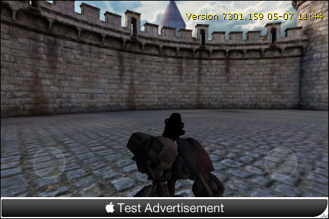
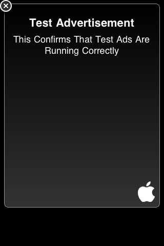

UDN
Search public documentation:
InGameAds
日本語訳
中国翻译
한국어
Interested in the Unreal Engine?
Visit the Unreal Technology site.
Looking for jobs and company info?
Check out the Epic games site.
Questions about support via UDN?
Contact the UDN Staff
中国翻译
한국어
Interested in the Unreal Engine?
Visit the Unreal Technology site.
Looking for jobs and company info?
Check out the Epic games site.
Questions about support via UDN?
Contact the UDN Staff
In-Game Ads
Overview
Ad Manager
InGameAdManager, is responsible for managing and displaying the in-game advertisements via the iAd network. This class handles all functionality associated with obtaining, dsiplaying, and interacting with in-game ads.
Properties
- bShouldPauseWhileAdOpen - If TRUE, the game will pause when the user clicks on the ad, which could take over the screen.
- Init - Event called by the engine to handle initialization of the ad system.
- ShowBanner [bShowBottomOfScreen] - Makes in-game advertisements visible in a banner.
- bShowBottomOfScreen - If TRUE, the banner will be displayed across the bottom of the screen. Otherwise, the banner is displayed across the top of the screen.
- HideBanner - Hides any visible in-game ad banners. If the ad is currently open (i.e., the user is interacting with the ad), the ad will be forcibly closed (see ForceCloseAd)
- ForceCloseAd - Forces an opened (clicked on) advertisement to close and return to the banner state. This may lead to loss of revenue, so don't do it unnecessarily.
- SetPauseWhileAdOpen [bShouldPause] - Sets whether the game should pause when an ad is clicked.
- bShouldPause - If TRUE, the game will pause when the ad is clicked. Otherwise, the game will continue to run.
EAdManagerDelegate enum defines the IDs for the types of delegates that can receive callbacks. Delegates can be assigned to each of these using the Platform Interface Delegates system.
- AMD_ClickedBanner - Delegates assigned to this ID are executed when the user clicks on an banner ad.
- bSuccessful - TRUE.
- Data - Contains no data.
- AMD_UserClosedAd - Delegates assigned to this ID are executed when the user closes an ad (after clicking on banner). Base class already handles un-pausing, so a delegate is only needed if you need extra handling.
- bSuccessful - TRUE.
- Data - Contains no data.
Implementation
PostBeginPlay() function of your PlayerController, the relevant delegates can be assigned and the banner can be shown. Of course, this is only if you want the banner displayed from the beginning of the game or level. You can choose to show or hide the ads anytime you desire by calling the relevant function on the InGameAdManager.
The PlatformInterfaceBase has a static function that will return a reference to the current InGameAdManager. You can use this in your PlayerController to get a reference to it and call its functions. Keep in mind this function will return None unless the game is being run on a platform that supports in-game ads.
Setup
Here, we get the reference to the InGameAdManager from the PlatformInterfaceBase and then add our delegates and show the ad banner. The delegates we have added are just examples to show that they are indeed being executed at the approproate times.
var InGameAdManager AdManager;
...
simulated function PostBeginPlay()
{
Super.PostBeginPlay();
AdManager = class'PlatformInterfaceBase'.static.GetInGameAdManager();
if (AdManager != none)
{
AdManager.AddDelegate(AMD_ClickedBanner, OnUserClickedAdvertisement);
AdManager.AddDelegate(AMD_UserClosedAd, OnUserClosedAdvertisement);
AdManager.ShowBanner(true);
}
}
/**
* Called on all player controllers when an in-game advertisement has been clicked
* on by the user. Game will probably want to pause, etc, at this point
*/
function OnUserClickedAdvertisement(const out PlatformInterfaceDelegateResult Result)
{
`log("MobilePC::OnUserClickedBanner");
}
/**
* Called on all player controllers when an in-game advertisement has been closed
* down (usually when user clicks Done or similar). Game will want to unpause, etc here.
*/
event OnUserClosedAdvertisement(const out PlatformInterfaceDelegateResult Result)
{
`log("MobilePC::OnUserClosedAd");
}
Destroyed() event of the PlayerController allows us to do a little cleanup, such as removing any delegates we have previously assigned.
event Destroyed()
{
super.Destroyed();
if (AdManager != none)
{
AdManager.ClearDelegate(AMD_ClickedBanner, OnUserClickedAdvertisement);
AdManager.ClearDelegate(AMD_UserClosedAd, OnUserClosedAdvertisement);
}
}
PlayerController should now result in the ad banner being shown along the bottom of the screen.

Tapping on the banner opens the full ad:

Obviously, you will only get test advertisements at this stage as you can see in the image above. You will need to join the iAd Network to receive real ads. This can be done through Apple's developer site.